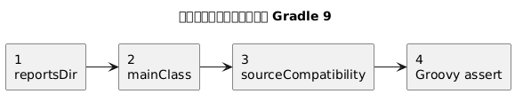
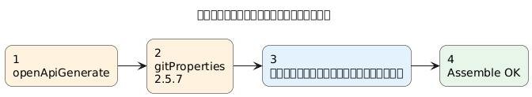
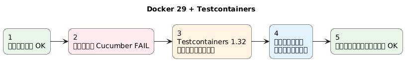
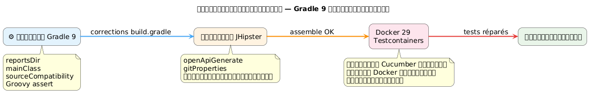
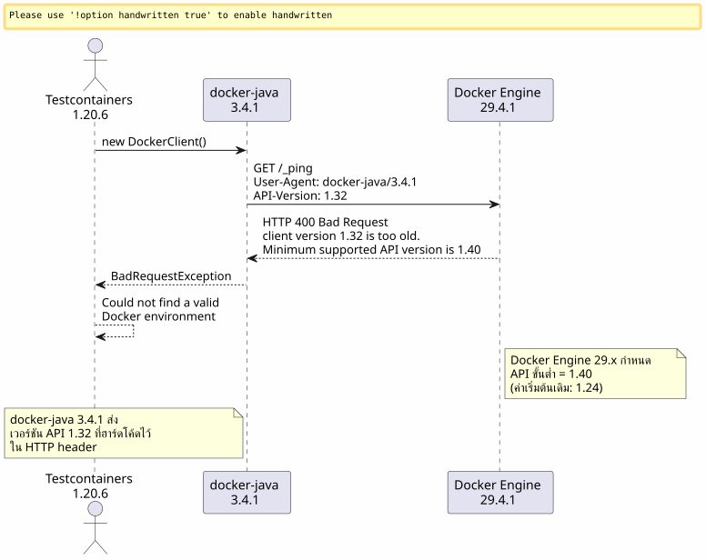
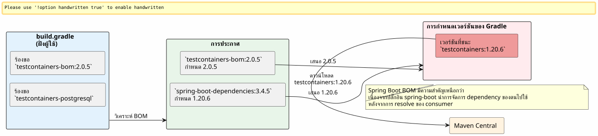
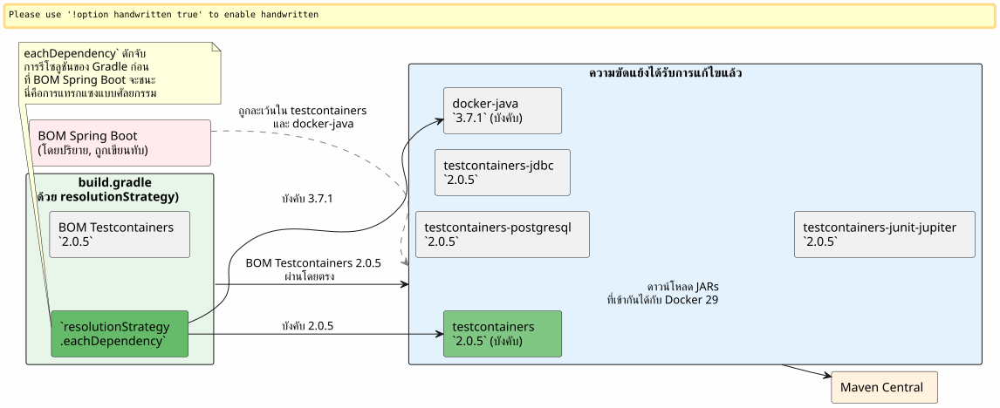

เมื่อ Gradle 9, Docker 29 และ Testcontainers เกิดตีกันนัว: การดีบั็กการบิลด์ JHipster
เผยแพร่เมื่อ 25 April 2026
- ฉาก: โปรเจกต์ JHipster, บิลด์ที่ไม่โหลดอีกต่อไป
- ข้อผิดพลาด 1: ตัวแปรผี `reportsDir
- ข้อผิดพลาด 2:
main = "…"ไม่มีอยู่แล้วใน Gradle 9 - ข้อผิดพลาด 3:
sourceCompatibilityไม่ใช่คุณสมบัติของโปรเจกต์อีกต่อไป - ข้อผิดพลาด 4: การยืนยัน Groovy แบบสามตัวถูกดำเนินการ
- ข้อผิดพลาด 5: การพึ่งพาโดยนัย
compileKotlin→ `openApiGenerate - ข้อผิดพลาด 6:
generateGitPropertiesล้มเหลวที่ `FilterOutputStream.write() - ในที่สุด: Testcontainers ก็เข้าสู่ฉาก
- ระยะที่ 1 : แนวทาง docker-java
- ระยะที่ 2: การค้นหาเว็บและเบรดครัมบ์ GitHub
- เฟส 3 : กับดักของอาร์ติแฟกต์ที่ถูกเปลี่ยนชื่อ
- เฟส 4 : บังคับความละเอียด
- ผลลัพธ์สุดท้าย
- ตารางสรุปการแก้ไข
- บทสรุป
เวลาอ่าน : 15 minutes
คุณเคยผ่านช่วงเวลาที่เพียง`./gradlew build`ที่คุณรันวันละร้อยครั้งจู่ๆ ก็พังด้วยข้อผิดพลาดที่ไม่เคยเห็นมาก่อน? คูณมันด้วยข้อผิดพลาดต่อเนื่องสิบเอ็ดครั้ง เพิ่มความไม่เข้ากันของ Docker Engine 29 เข้าไปเต็มๆ โรยด้วย Gradle 9 ที่ทำให้ API ที่เราใช้มานานสิบปีหายไป นี่คือบันทึกการเดินทางฉบับสมบูรณ์
แผนภาพที่ 1 — การย้ายไปยัง Gradle 9 (ห่วงโซ่ข้อผิดพลาด)
วัตถุประสงค์: เพื่อแสดงชุดของความไม่เข้ากัน

วัตถุประสงค์: แยกปลั๊กอินที่เสียหายออก

วัตถุประสงค์: ปัญหารันไทม์


ฉาก: โปรเจกต์ JHipster, บิลด์ที่ไม่โหลดอีกต่อไป
โครงการ`edster`เป็นแอปพลิเคชัน JHipster ที่สร้างขึ้นในปี 2024 สคริปต์ build ราก`build.gradle`คงที่มาหลายเดือน จากนั้นเราตัดสินใจอัปเกรดเวอร์ชัน:
ส่วนประกอบ |
เวอร์ชันเป้าหมาย |
Gradle |
9.4.1 |
จาวา |
21.0.11-tem (Eclipse Temurin) |
JHipster |
8.x (เฟรมเวิร์ก`tech.jhipster:jhipster-framework:8.11.0`) |
สปริงบูต |
3.4.5 |
คอตลิน |
2.3.0 |
Docker Engine |
29.4.1 (API 1.54) |
การเปลี่ยนเวอร์ชัน Java ทำผ่าน SDKMAN:
sdk use java 21.0.11-temการเปิดตัวครั้งแรก:
$ ./gradlew build --no-daemon
FAILURE: Build failed with an exception.
* Where:
Build file '/home/.../edster/build.gradle' line: 18
* What went wrong:
An exception occurred applying plugin request [id: 'jhipster.cucumber-conventions']
> Failed to apply plugin 'jhipster.cucumber-conventions'.
> Could not create task ':cucumberTest'.
> Could not create task ':consoleLauncherTest'.
> Could not set unknown property 'reportsDir' for task ':consoleLauncherTest'เราไม่สามารถผ่านขั้นตอนการโหลด build script ไปได้เลย ปัญหาอยู่ใน`buildSrc/src/main/groovy/jhipster.cucumber-conventions.gradle`Please provide the French text you’d like me to translate.
ข้อผิดพลาด 1: ตัวแปรผี `reportsDir
สคริปต์`jhipster.cucumber-conventions.gradle`ประกอบด้วย:
tasks.register('consoleLauncherTest', JavaExec) {
dependsOn(testClasses)
String cucumberReportsDir = file("$buildDir/reports/tests")
outputs.dir(reportsDir) // <-- reportsDir n'existe PAS
classpath = sourceSets["test"].runtimeClasspath
main = "org.junit.platform.console.ConsoleLauncher"
// ...
}ตัวแปรที่กำหนดคือ`cucumberReportsDir`. ตัวที่ใช้คือ`reportsDir`-- ซึ่งไม่ได้ถูกกำหนดไว้ที่ใดเลย
การแก้ไขPlease provide the French text you would like me to translate.outputs.dir(cucumberReportsDir)
ข้อผิดพลาด 2: main = "…" ไม่มีอยู่แล้วใน Gradle 9
ติดตามทันที:
Could not set unknown property 'main' for task ':consoleLauncherTest' of type org.gradle.api.tasks.JavaExec.Gradle 9 ลบพร็อพเพอร์ตี้`main`เพื่อประโยชน์ของ`mainClass`เกี่ยวกับงาน`JavaExec`.
การแก้ไขโปรดระบุข้อความที่คุณต้องการให้แปลครับ`mainClass = "org.junit.platform.console.ConsoleLauncher"`
ข้อผิดพลาด 3: sourceCompatibility ไม่ใช่คุณสมบัติของโปรเจกต์อีกต่อไป
ข้อผิดพลาดใหม่:
Could not set unknown property 'sourceCompatibility' for root project 'edster' of type org.gradle.api.Project.สคริปต์รูทมี:
sourceCompatibility=17
targetCompatibility=17Gradle 9 ลบพร็อพเพอร์ตี้เหล่านี้ที่ระดับ root พวกมันต้องอยู่ในบล็อก`java`.
การแก้ไขPlease provide the French text you’d like me to translate.
java {
sourceCompatibility = JavaVersion.VERSION_21
targetCompatibility = JavaVersion.VERSION_21
}ข้อผิดพลาด 4: การยืนยัน Groovy แบบสามตัวถูกดำเนินการ
สคริปต์เก่ามี:
assert System.properties["java.specification.version"] == "17" || "21" || "24"ใน Groovy,"21" et "24"`เป็นสตริงที่เป็น truthy นิพจน์จะให้ผลเป็น(… == "17") || true || true`, ซึ่งเป็นจริงเสมอ — แต่ไวยากรณ์ไม่ถูกต้องสำหรับการยืนยันแบบเข้มงวดที่ต้องการ
การแก้ไขPlease provide the French text you’d like me to translate.
assert System.properties["java.specification.version"] in ["17", "21", "23", "24"]ข้อผิดพลาด 5: การพึ่งพาโดยนัย compileKotlin → `openApiGenerate
บิลด์กำลังดำเนินไป การคอมไพล์ Kotlin สำเร็จแล้ว จากนั้น:
Task ':compileKotlin' uses this output of task ':openApiGenerate'
without declaring an explicit or implicit dependency.Gradle 9 ปฏิเสธการพึ่งพาโดยนัยระหว่างทาสก์ เนื่องจาก`compileKotlin`อ่านแหล่งที่มาที่สร้างโดย`openApiGenerate`, ต้องประกาศลิงก์
การแก้ไขใน`build.gradle`No text was provided to translate.
afterEvaluate {
tasks.named("compileKotlin").configure {
dependsOn(tasks.named("openApiGenerate"))
}
}Le `afterEvaluate`จำเป็นเพราะ`openApiGenerate`เป็นส่วนขยาย (ปลั๊กอิน OpenAPI Generator) และไม่ใช่ทาสก์ที่สามารถเข้าถึงได้โดยตรงในระหว่างขั้นตอนการกำหนดค่า
ข้อผิดพลาด 6: generateGitProperties ล้มเหลวที่ `FilterOutputStream.write()
การคอมไพล์ Java ผ่านแล้ว ทรัพยากรได้รับการประมวลผล จากนั้น:
> Task :generateGitProperties FAILED
No signature of method: java.io.FilterOutputStream.write() is applicable for argument types: (Integer) values: [103]ปลั๊กอิน`gradle-git-properties`เวอร์ชัน 2.5.0 ไม่เข้ากันกับ Java 21 / Gradle 9 บั๊กภายในพยายามเรียก`write(int)`ผ่าน Groovy บนสตรีมที่ปิดมัน
การแก้ไขใน`gradle.properties`Please provide the French text you’d like me to translate into Thai.
gitPropertiesPluginVersion=2.5.7ในที่สุด: Testcontainers ก็เข้าสู่ฉาก
จนถึงตอนนี้ มันเป็นการดีบักสคริปต์บิลด์ล้วน ๆ ข้อผิดพลาดแต่ละข้อคือความเข้ากันไม่ได้ของ Gradle 9 หรือ Java 21 ในสคริปต์บิลด์ หลังจากหกการแก้ไขข้างต้นแล้ว`./gradlew assemble`ผ่านไปด้วยดี
แต่`./gradlew build`รันการทดสอบด้วย และการทดสอบ Cucumber ใช้ Testcontainers เพื่อเริ่ม PostgreSQL ชั่วคราว
Could not find a valid Docker environment.
EnvironmentAndSystemPropertyClientProviderStrategy: failed with exception BadRequestException
(Status 400: {"message":"client version 1.32 is too old. Minimum supported API version is 1.40"}
UnixSocketClientProviderStrategy: failed with exception BadRequestException
(Status 400: {"message":"client version 1.32 is too old. Minimum supported API version is 1.40"}Testcontainers ไม่สามารถสื่อสารกับ Docker ได้ กลยุทธ์ที่แตกต่างกันสองแบบ (ตัวแปรสภาพแวดล้อม + ซ็อกเก็ต Unix) ล้มเหลวด้วยข้อผิดพลาดเดียวกัน

ระยะที่ 1 : แนวทาง docker-java
ปฏิกิริยาแรก: ไคลเอนต์ Docker Java ที่ Testcontainers ใช้ส่งเวอร์ชัน API`1.32`ในการแฮนด์เชค HTTP ของตน แต่ Docker Engine 29.4.1 กำหนดขั้นต่ำของ`1.40`. ปัญหาอยู่ที่ฝั่งไคลเอนต์ ไม่ใช่ที่แดมอน
การตรวจสอบเวอร์ชันของ docker-java ที่ถูก resolve โดย Testcontainers 1.20.6:
$ ./gradlew dependencies --configuration testRuntimeClasspath | grep docker-java
+--- com.github.docker-java:docker-java-api:3.4.1
+--- com.github.docker-java:docker-java-transport:3.4.1docker-java 3.4.1 ซึ่งมาจาก Testcontainers 1.20.6 เวอร์ชันสาธารณะล่าสุดของ docker-java คือ 3.5.1 ลองบังคับให้อัปเกรดเวอร์ชันผ่าน`resolutionStrategy`ในบล็อก`configurations` de `build.gradle`Please provide the French text you’d like me to translate into Thai.
configurations {
all {
resolutionStrategy.eachDependency { details ->
if (details.requested.group == "com.github.docker-java"
&& details.requested.name.startsWith("docker-java")) {
details.useVersion("3.5.1")
}
}
}
}รัน build ใหม่ ข้อผิดพลาดเดิม:`client version 1.32 is too old`.
การตรวจสอบแคช Gradle: ดาวน์โหลด JAR ใหม่แล้ว แต่ข้อผิดพลาดยังคงอยู่ docker-java 3.5.1 ยังคงส่ง`1.32`. เวอร์ชันนี้จึงไม่เพียงพอสำหรับ Docker Engine 29.4.1
การทำให้บริสุทธิ์: ล้างแคช Gradle ให้หมดสิ้น เพียงเพื่อความแน่ใจ :
rm -rf ~/.gradle/caches
rm -rf /path/to/project/.gradleรีสตาร์ทแบบเต็มรูปแบบหลัง purge แล้วยังเกิดข้อผิดพลาดเดิม
ระยะที่ 2: การค้นหาเว็บและเบรดครัมบ์ GitHub
docker-java 3.5.1 ไม่เพียงพอ เหลือเพียงแค่ค้นหาว่ามีใครเคยเจอปัญหานี้แบบตรงตัวบ้างหรือไม่
การค้นหาแบบเจาะจงใน issue ของ testcontainers-java และ docker-java:
site:github.com/testcontainers "client version 1.32 is too old"
site:github.com/docker-java "client version 1.32" Docker Engine 29ผลลัพธ์แรกทันที:
-
testcontainers-java#11210—
[Bug]: client version 1.32 is too old. Minimum supported API version is 1.44 -
testcontainers-java#11212—
[Bug]: Docker 29.0.0 could not find a valid Docker environment -
testcontainers-java#11491—
[Bug]: Incompatibility in Ubuntu Github runners with Docker Engine 29.1.*
เส้นทางนั้นชัดเจน: Docker Engine 29.x ได้ยกระดับเวอร์ชัน API ขั้นต่ำของตนจาก`1.24`(ข้อบกพร่องเดิม) ถึง`1.40`. Testcontainers 1.20.x ใช้ docker-java 3.4.x ซึ่งเจรจาเวอร์ชัน API โดยการส่ง`1.32`. เดมอนปฏิเสธอย่างสุภาพแต่หนักแน่น
ใน issue #11491 ผู้ดูแลตอบว่า:
Please provide the French text you’d like me to translate into Thai. สวัสดี ฉันมีโปรเจกต์ที่รันด้วยเวอร์ชัน 2.0.3 บน GH runner ที่ใช้เอนจิน 29.1 และมันทำงานได้ ทุกคนช่วยตรวจสอบหน่อยได้ไหมว่ามีความขัดแย้งของเวอร์ชันหรือไม่ โปรดจำไว้ว่าโมดูลทั้งหมดมีคำนำหน้าด้วย`testcontainers-. ดังนั้น เริ่มตั้งแต่เวอร์ชัน 2.x เราก็เปลี่ยนจาก`postgresql to testcontainers-postgresql Please provide the French text you’d like me to translate.
คำตอบนี้มีข้อมูลสำคัญสองรายการขออภัยครับ คุณยังไม่ได้ระบุข้อความภาษาฝรั่งเศสที่ต้องการให้แปล กรุณาใส่ข้อความที่ต้องการแปลด้วยครับ
-
Testcontainers 2.0.3+ แก้ไขปัญหานี้
-
โมดูลได้ถูกถูกเปลี่ยนชื่อโดยมีคำนำหน้า `testcontainers-
เฟส 3 : กับดักของอาร์ติแฟกต์ที่ถูกเปลี่ยนชื่อ
การเปลี่ยนชื่อครั้งนี้รุนแรงมาก ใน Testcontainers 2.x ไม่มีชื่อเก่าใด ๆ ที่ยังใช้งานได้ภายใต้ชื่อนั้นอีกต่อไป:
ชื่อเดิม (1.x) |
ชื่อใหม่ (2.x) |
|
|
|
|
|
|
|
ไม่เปลี่ยนแปลง |
ความพยายามครั้งแรก: ใช้ BOM Testcontainers 2.0.5 และชื่ออาร์ติแฟกต์ใหม่ใน`build.gradle`.
dependencies {
testImplementation platform("org.testcontainers:testcontainers-bom:2.0.5")
testImplementation "org.testcontainers:testcontainers-postgresql"
testImplementation "org.testcontainers:testcontainers-jdbc"
testImplementation "org.testcontainers:testcontainers-junit-jupiter"
testImplementation "org.testcontainers:testcontainers"
}./gradlew build
FAILURE: Could not find org.testcontainers:jdbc:2.0.5.
Could not find org.testcontainers:junit-jupiter:2.0.5.BOM ของ testcontainers-bom ไม่เพียงพอทำไม? เพราะ Spring Boot 3.4.5 มี BOM สำหรับจัดการ dependency ของตัวเอง (spring-boot-dependencies) ที่ชนะเกี่ยวกับ BOM ของ Testcontainers ในการ resolve แบบ transitive Spring Boot กำหนด`testcontainers` à 1.20.6, และดังนั้นอาร์ติแฟกต์ทั้งหมดที่ไม่ได้ระบุอย่างชัดเจนใน BOM ของ Spring Boot (เช่นอาร์ติแฟกต์ใหม่`testcontainers-*) แปลงเป็นชื่อเดิม`1.20.6-- ซึ่งไม่มีอยู่ในเวอร์ชันนี้แล้ว
ขณะตรวจสอบ`dependencies --configuration testRuntimeClasspath`, จะพบว่า:
+--- org.testcontainers:testcontainers -> 1.20.6 (*)
| \--- org.testcontainers:testcontainers:2.0.5 -> 1.20.6Le `→`ระบุการแทนที่: Testcontainers 2.0.5 ถูก ร้องขอ แต่ Spring Boot บังคับ`1.20.6`The text to be translated is missing. Please provide the French text you would like translated into Thai.

เฟส 4 : บังคับความละเอียด
กลยุทธ์กลายเป็นสองแนวทาง:
-
บังคับให้ docker-java เป็นเวอร์ชัน 3.7.1 (ทดสอบแล้วว่าเข้ากันได้กับ Docker Engine 29)
-
บังคับ Testcontainers core เป็น 2.0.5 โดยข้าม BOM ของ Spring Boot

การแก้ไขขั้นสุดท้ายใน`build.gradle`Please provide the French text you’d like me to translate into Thai.
configurations {
all {
resolutionStrategy.eachDependency { details ->
if (details.requested.group == "com.github.docker-java"
&& details.requested.name.startsWith("docker-java")) {
details.useVersion("3.7.1")
}
if (details.requested.group == "org.testcontainers"
&& details.requested.name == "testcontainers") {
details.useVersion("2.0.5")
}
}
}
}
dependencies {
testImplementation platform("org.testcontainers:testcontainers-bom:2.0.5")
testImplementation "org.testcontainers:testcontainers-jdbc"
testImplementation "org.testcontainers:testcontainers-junit-jupiter"
testImplementation "org.testcontainers:testcontainers-postgresql"
testImplementation "org.testcontainers:testcontainers"
// ... autres dépendances Spring Boot
}Le `resolutionStrategy.eachDependency`เป็นวิธีเดียวที่จะข้าม BOM`spring-boot-dependencies`จัดการโดยปลั๊กอิน Spring Boot การทดสอบความเท่ากันบน`details.requested.name == "testcontainers"`ถูกจำกัดโดยเจตนา: เราบังคับเฉพาะโมดูล core เท่านั้น โมดูล`testcontainers-*`เป็นไปตาม BOM ของ Testcontainers 2.0.5 ที่เราได้ประกาศไว้อย่างชัดเจน
ผลลัพธ์สุดท้าย
$ ./gradlew build --no-daemon
> Task :consoleLauncherTest
[2 containers found]
[2 containers started]
[2 containers successful]
BUILD SUCCESSFUL in 1m 16sTestcontainers 2.0.5 + docker-java 3.7.1 ในที่สุดก็สามารถสร้างคอนเทนเนอร์ PostgreSQL ของตนผ่าน Docker Engine 29.4.1 ได้แล้ว ข้อผิดพลาดทางธุรกิจขั้นสุดท้าย (HTTP 500 ในการทดสอบ Cucumber) เป็นปัญหาของแอปพลิเคชันที่ไม่เกี่ยวข้องกับ build script โดยสิ้นเชิง
ตารางสรุปการแก้ไข
| Please provide the French text you’d like me to translate into Thai. | ไฟล์ | ปัญหา | การแก้ไข |
|---|---|---|---|
1 |
|
ตัวแปร`reportsDir`ที่ไม่มีอยู่ |
|
2 |
|
`main`Gradle 9 ที่เลิกใช้แล้ว |
|
3 |
|
`sourceCompatibility`top-level ถูกห้ามใน Gradle 9 |
บล็อก`java { sourceCompatibility = JavaVersion.VERSION_21 }` |
4 |
|
Assertion Groovy ที่ไม่ถูกต้องตามไวยากรณ์ |
|
5 |
|
การพึ่งพาโดยนัย`compileKotlin`The source text to translate appears to be missing. Please provide the French text you’d like translated to Thai. |
|
6 |
|
`gitPropertiesPluginVersion`ไม่เข้ากันกับ Java 21 |
|
7 |
แคช Gradle |
docker-java 3.5.1 ทดสอบแล้ว แก้ไขแล้วแต่ยังไม่เพียงพอ |
Purge + การเปลี่ยนไปใช้ docker-java 3.7.1 |
8 |
|
Testcontainers 1.20.6 เข้ากันไม่ได้กับ Docker Engine 29 |
การบังคับใช้ Testcontainers 2.0.5 + prefix`testcontainers-*`+ resolutionStrategy เทียบกับ Spring Boot BOM |
บทสรุป
หากบิลด์ JHipster/Gradle ของคุณล้มเหลวหลังจากอัปเกรดเป็น Gradle 9 + Docker Engine 29 ข้อผิดพลาดจะแบ่งออกเป็นสองประเภท:
ข้อผิดพลาดของสคริปต์ build(6 ข้อแรก) : Gradle 9 ลบคุณสมบัติและไวยากรณ์ที่ใช้งานได้มาหลายปี (sourceCompatibility=, main =, reportsDir). สิ่งเหล่านี้เป็นการย้ายข้อมูลเชิงกลไกเมื่อรู้จัก API ใหม่แล้ว
ข้อผิดพลาดรันไทม์ของ Docker(2 รายการหลัง) : Docker Engine 29.4.1 ตัดไคลเอนต์ API ที่ < 1.40 ออก Testcontainers 1.20.6 (ถูกกำหนดโดย Spring Boot 3.4.5) ใช้ docker-java 3.4.1 ซึ่งส่ง 1.32 มีเพียง Testcontainers 2.0.5 + docker-java 3.7.1 เท่านั้นที่แก้ปัญหาได้ โดยมีการเปลี่ยนชื่อ artifacts และบังคับเวอร์ชันผ่าน`resolutionStrategy.eachDependency`เป็นวิธีเดียวที่จะหลีกเลี่ยง BOM โดยนัยของ Spring Boot
สคริปต์บิลด์ Gradle ที่รากของโปรเจกต์ตอนนี้สะอาดแล้ว`./gradlew build`เปลี่ยนไปใช้ Java 21, Gradle 9.4.1, Spring Boot 3.4.5 และ Docker Engine 29.4.1